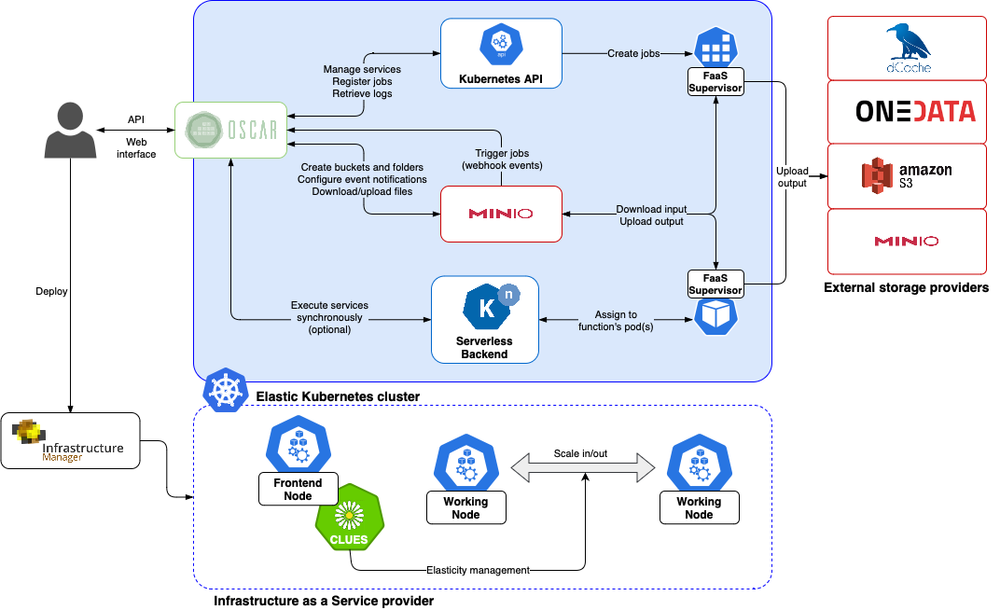
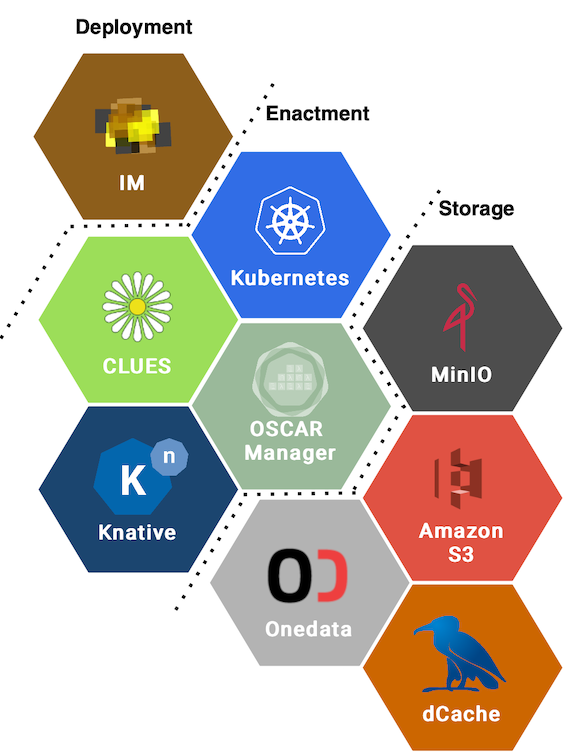

Introduction

OSCAR is an open-source platform to support the event-driven serverless computing model for data-processing applications. It can be automatically deployed on multi-Clouds, and even on low-powered devices, to create highly-parallel event-driven data-processing serverless applications along the computing continuum. These applications execute on customized runtime environments provided by Docker containers that run on elastic Kubernetes clusters. It is also integrated with the SCAR framework, which supports a High Throughput Computing Programming Model to create highly-parallel event-driven data-processing serverless applications that execute on customized runtime environments provided by Docker containers run on AWS Lambda and AWS Batch.
Concepts
- OSCAR Cluster: A Kubernetes cluster (either fixed size or elastic) configured with the OSCAR services and components. The cluster must have at least one front-end node, which executes the OSCAR control plane and one or several working nodes.
- OSCAR Service: The execution unit in the OSCAR framework, typically defined in FDL, by a:
- Docker image, providing the customized runtime environment for an application.
- Execution requirements.
- User-defined shell script that will be executed in a dynamically-provisioned container.
- (Optional) The object storage that will trigger the execution of the OSCAR service upon a file upload.
- (Optional) The object storage(s) on which the output results of the OSCAR service will be stored.
- (Optional) Deployment strategy and additional configuration.
Rationale
Users create OSCAR services to:
- Execute a containerized command-line application or web service in response to:
- a file upload to an object store (e.g. MinIO), thus supporting loosely-coupled High-Throughput Computing use cases where many files need to be processed in parallel in a distributed computing platform.
- a request to a load-balanced auto-scaled HTTP-based endpoints, thus allowing to exposed generic scientific applications as highly-scalable HTTP endpoints.
- Execute a pipeline of multiple OSCAR service where the output data of one triggers the execution of another OSCAR service, potentially running in different clusters, thus creating event-driven scalable pipelines along the computing continuum.
An admin user can deploy an OSCAR cluster on a Cloud platform so that other users belonging to a Virtual Organization (VO) can create OSCAR services. A VO is a group of people (e.g. scientists, researchers) with common interests and requirements, who need to work collaboratively and/or share resources (e.g. data, software, expertise, CPU, storage space) regardless of geographical location. OSCAR supports the VOs defined in EGI, which are listed in the 'Operations Portal'. EGI is the European's largest federation of computing and storage resource providers united by a mission of delivering advanced computing and data analytics services for research and innovation.
Architecture & Components

OSCAR runs on an elastic Kubernetes cluster that is deployed using:
- IM, an open-source virtual infrastructure provisioning tool for multi-Clouds.
The following components are deployed inside the Kubernetes cluster in order to support the OSCAR platform:
- CLUES, an elasticity manager that horizontally scales in and out the number of nodes of the Kubernetes cluster according to the workload.
- MinIO, a high-performance distributed object storage server that provides an API compatible with S3.
- Knative, a serverless framework to serve container-based applications for synchronous invocations (default Serverless Backend).
- OSCAR Manager, the main API, responsible for the management of the services and the integration of the different components.
- OSCAR Dashboard, an easy-to-use web-based graphical user interface aimed at end users.
As external storage providers, the following services can be used:
- External MinIO servers, which may be in clusters other than the platform.
- Amazon S3, AWS's object storage service that offers industry-leading scalability, data availability, security, and performance in the public Cloud.
- Onedata, the global data access solution for science used in the EGI Federated Cloud.
- Any storage provider that can be accessible through WebDAV protocol. An example of a storage provider supporting this protocol is dCache, a storage middleware system capable of managing the storage and exchange of large data quantities.
Note: All of the mentioned storage providers can be used as output, but only MinIO can be used as input. Amazon S3 and dCache need DCNiOS as output.
An OSCAR cluster can be easily deployed via the IM Dashboard on any major public and on-premises Cloud provider, including the EGI Federated Cloud.
A summary of the components used:

An OSCAR cluster can be accessed via its REST API, the web-based OSCAR Dashboard and the command-line interface provided by OSCAR CLI.